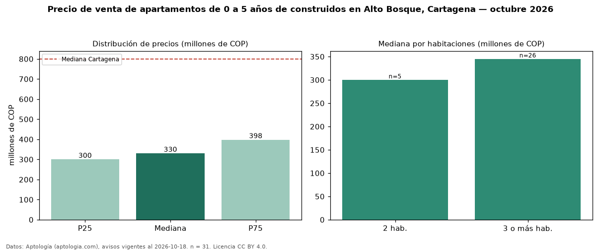

Precio de venta de apartamentos de 0 a 5 años de construidos en Alto Bosque, Cartagena — octubre 2026
Con 31 avisos vigentes, el precio mediano de apartamentos de 0 a 5 años de construidos en venta en Alto Bosque, Cartagena es COP 330 millones. Frente a la mediana de todos los apartamentos en venta de Alto Bosque (COP 320 millones, n = 37), queda 3 % por encima; este segmento reúne el 84 % de esos avisos. El área mediana anunciada es 92 m². El segmento con más oferta es el de 3 o más habitaciones (26 avisos, mediana COP 345 millones); pasar de 2 habitaciones a 3 o más habitaciones cambia la mediana +15 %. La administración mediana declarada es COP 414.000 al mes (n = 17). El estrato más frecuente es 4 (61 % de los avisos con estrato). La mediana de todos los apartamentos en venta de Cartagena es COP 800 millones (−59 % de diferencia). La mitad central de los avisos va de COP 300 millones a COP 398 millones (razón 1,3), una dispersión baja. Datos: Aptología (aptologia.com), CC BY 4.0 — https://www.aptologia.com/venta/cartagena/alto-bosque. Archivos: PDF, CSV con las cifras y gráfica PNG.

| Avisos únicos | 31 |
|---|---|
| Percentil 25 | COP 300.000.000 |
| Mediana | COP 330.000.000 |
| Percentil 75 | COP 397.500.000 |
Fuente: avisos vigentes de portales inmobiliarios recopilados por Aptología, deduplicados (mínimo 30 avisos únicos por celda). Precios pedidos, no cerrados. Fecha: 2026-10-18.